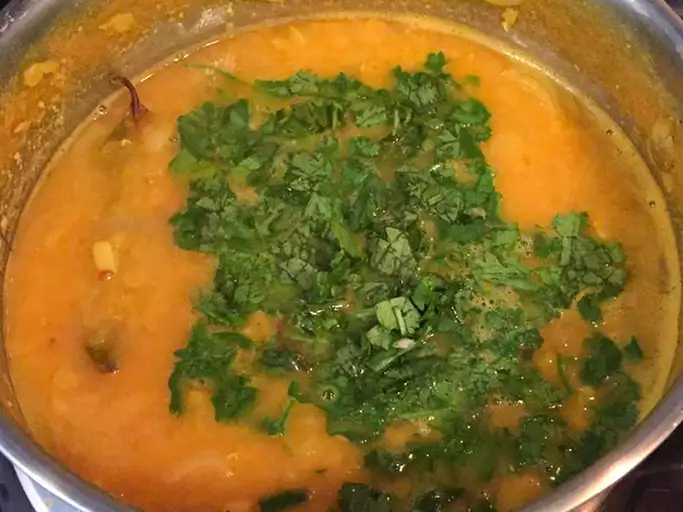

Bengali Dhal

Here is my recipe for dhal based on my many experiences cooking with my friends over the years.
We love this served over freshly made basmati rice
Ingredients
- 1 cup red lentils
- 3 cups water
- 1 tablespoon vegetable oil
- ¾ cup cherry tomatoes
Steps
- Wash lentils in a strainer. Combine lentils and water in a saucepan over medium-high heat.
- Cook and stir until onion has softened and translucent, about 5 minutes.
- Add onion-garlic mixture into cooked lentils and stir. Garnish with chopped cilantro.